⚔️ The Kharon Reach Campaign
A Warhammer 40k Escalation League | Campaign Master & Player
Something Beneath the Planet is Waking Up...
"Kharon Reach was never meant to matter. An exhausted mining world on the edge of the Great Rift, its surface had long ago been stripped bare by industrial excavation. Acid oceans boiled beneath permanent ash storms, while the surviving population endured within refinery-habs and deep mining vaults carved into the planet's crust.
Then the disappearances began..."
📍 Campaign Map Progression
Watch the war escalate month by month as factions vie for control of Kharon Reach
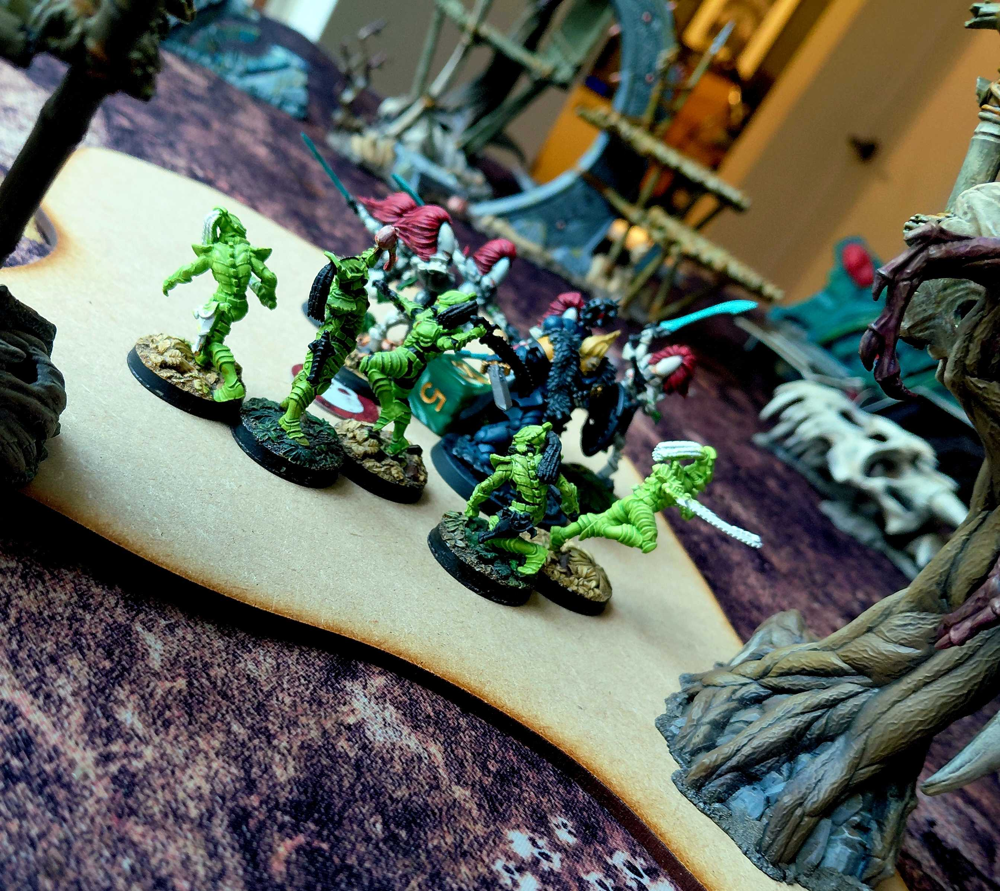
🔥 Heroic Moment: Yann Ashenfury
The Last Stand
In the heat of battle, surrounded by enemies, Yann Ashenfury made his final stand. Though he fell that day, his sacrifice would not be forgotten.
Even in death, Yann Ashenfury still serves. His broken body will be interred within the cold ceramite of a Dreadnought, his fury preserved for eternity.
⚔️ Battle Highlights
The Battle for Sector 26 – The Maw Below
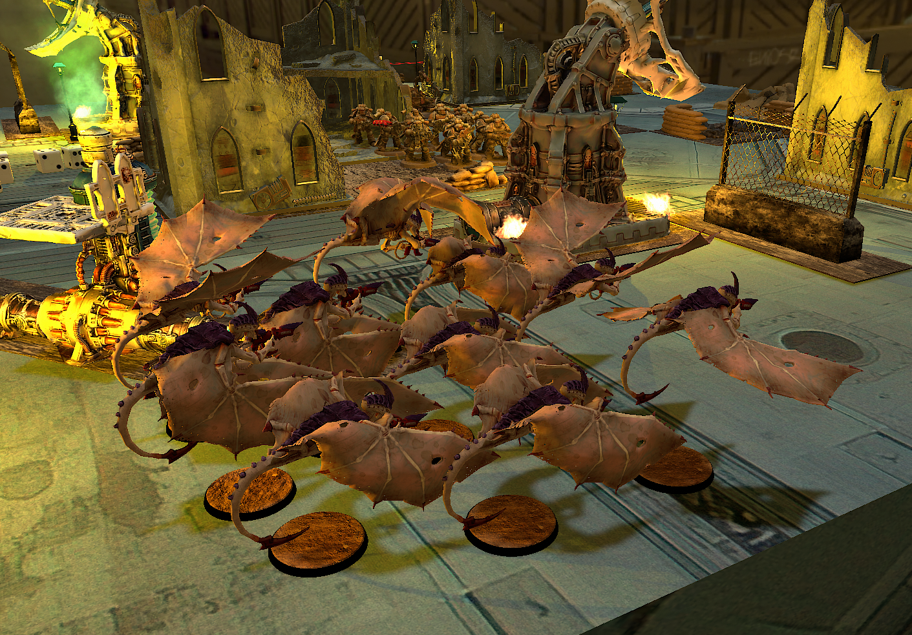
Mission: Take and Hold (Iron Warriors) vs Reconnaissance (Tyranids)
The Iron Warriors formed disciplined gun lines and dared the Tyranids to attack. The opening salvo was devastating.
"A brood of Gargoyles attempting to seize the initiative was annihilated almost immediately, leaving the Tyranid advance blind and fragmented."
"The engagement became little more than an execution. The Tyranids were almost completely annihilated, while the Iron Warriors remained firmly in control."
Intercepted Vox Transmission
"Ironhold, this is Vossk-pattern relay three. We have contact.
Initial auspex returns were false. Repeat: false.
The force occupying the northern green zone is not Salamanders...
Eldar.
They have been wearing the signal-shadow of the XVIII Legion to mask their arrival. Every faction on this world has been watching for green armour and flame icons while the xenos dug themselves into the northern territories.
Clever. Irritating.
The Wolves Arrive
"The Space Wolves will not tolerate the wanton destruction of brave Imperial citizens! And if we manage to hew many xenos and potentially recover lost artefacts before they fall into the hands of Chaos then what an Epic Saga t'will be!
Howl my Brethren! For the Wolves of Fenris approach Kharon-Reach and let none stand in our way!
AROOOOOOO!!!!
The Iron Warriors Civil War
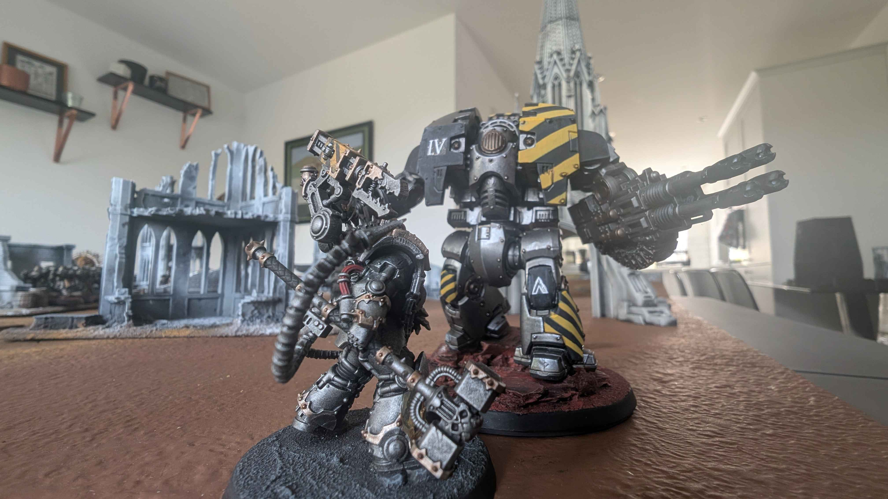
Warsmith Drokhar, 77th Grand Siege Cohort:
"By decree of Perturabo, we came to this world with a single purpose: reclaim the vaults beneath Kharon Reach and deny them to every rival. We wage war as our father taught us—with discipline, precision and inevitability."
"Yet already I hear whispers spreading through the ranks. A name. Kravek Morne."
"He preaches strength through anarchy. He offers glory instead of victory. He promises freedom from discipline and the right to seize whatever spoils a warrior can hold."
"He mistakes rebellion for strength. He mistakes ambition for purpose. He is wrong."
"The Iron Warriors did not endure ten thousand years because we chased favour from the Dark Gods. We endured because stone does not betray itself. Iron does not argue. Siegecraft does not care for ego."
"Any warrior who abandons the Cohort to follow Morne abandons the Fourth Legion itself."
"Effective immediately, all forces loyal to Kravek Morne are declared renegade even by the standards of the IV Legion."
"The civil war begins."
The Fall of Bastion XII
The withdrawal of the Astra Militarum from Kharon Reach was not a strategic redeployment. It was a rout.
Warsmith Kravek Morne smashed through the Imperial fortress lines in a relentless offensive. The 143rd Cadian, the Vostroyan 9th and elements of the Steel Legion were annihilated attempting to delay the advance.
"This is Lord General Castor to all remaining Imperial personnel. Operation Iron Lantern has failed. Kravek Morne now controls the primary Imperial landing zone. Without orbital reinforcement, Kharon Reach can no longer be held. Emperor forgive us."
The last troop transports clawed their way into orbit, leaving millions of civilians trapped on the surface. Across the eastern hemisphere, the banners of the Imperium were torn down. In their place rose the black-and-yellow hazard stripes of the Iron Warriors.
Yet victory brought no unity.
Even as Kravek Morne consolidated his newly won fortress, Warsmith Drokhar refused to acknowledge his authority. Drokhar marches beneath the unbroken colours of the IV Legion, his armour bearing the scars of ten thousand years of war but little of the corruption his brothers have embraced.
The Imperium had fallen. Now, the IV Legion itself stood divided. And somewhere beyond the shattered front lines, the Tyranid hive fleet continued to feed, utterly indifferent to which banner flew above the ruins.
📸 Action Shots & Paint Progress
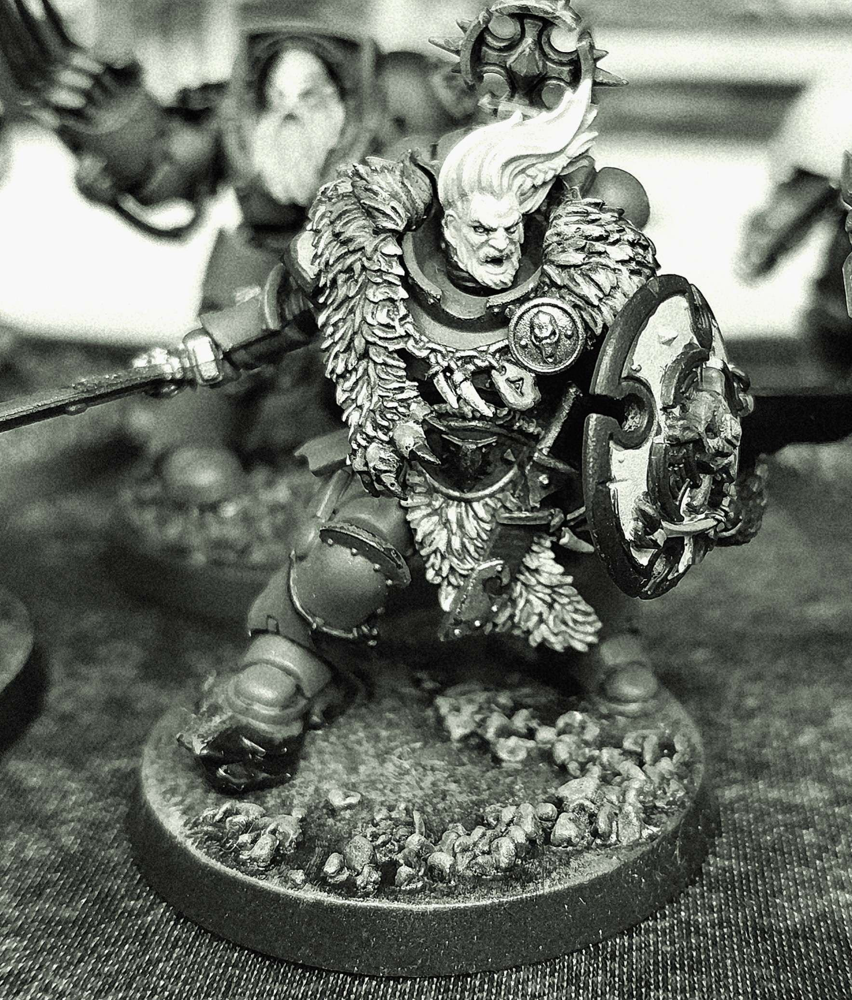
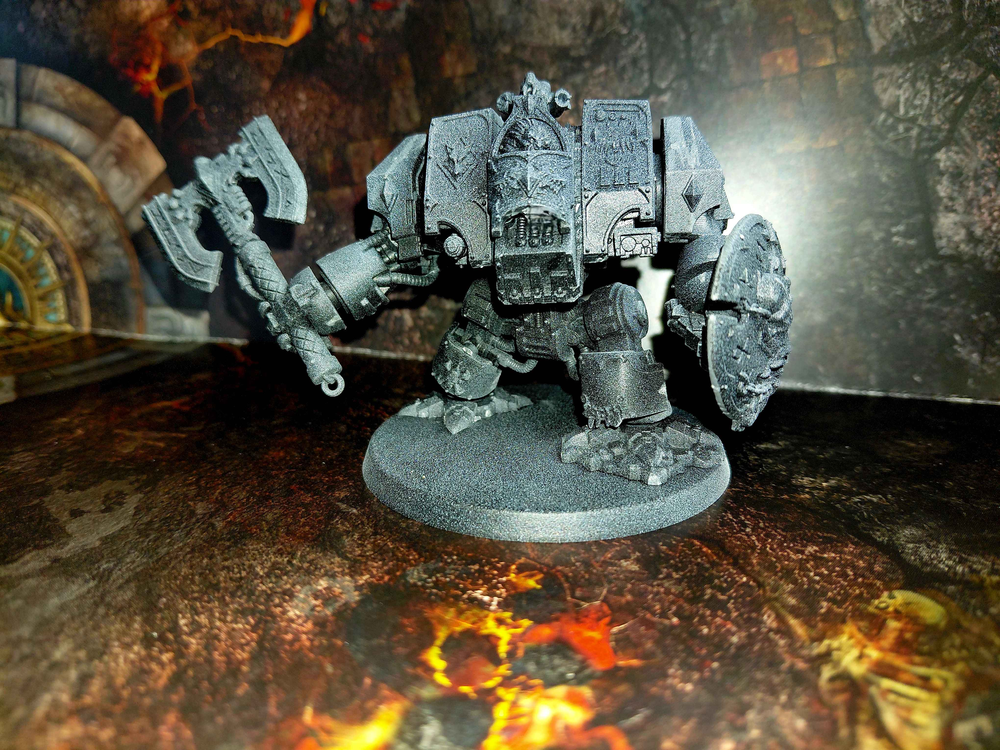
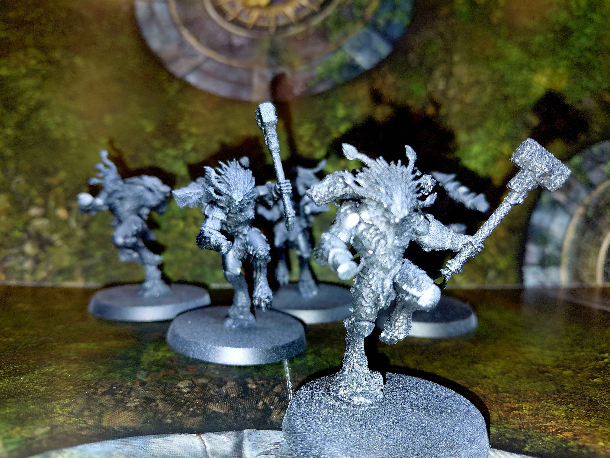
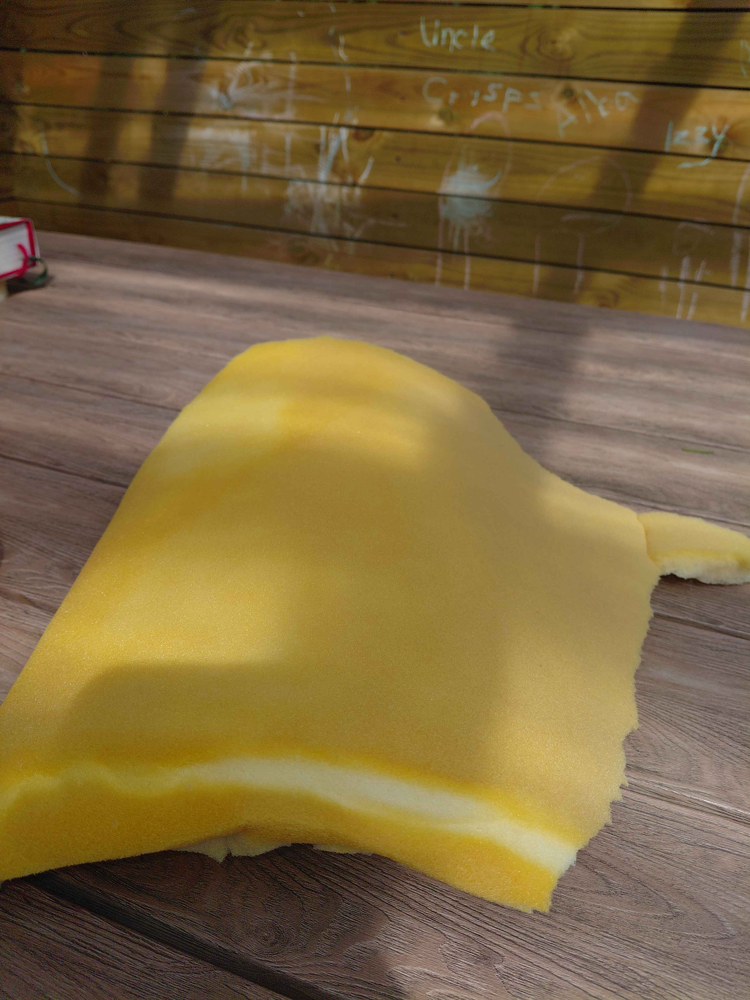
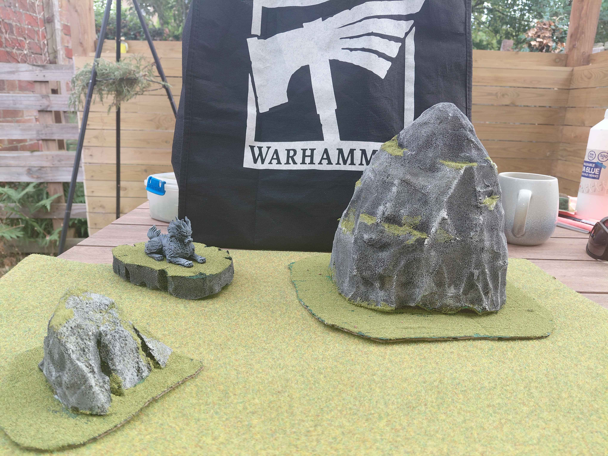
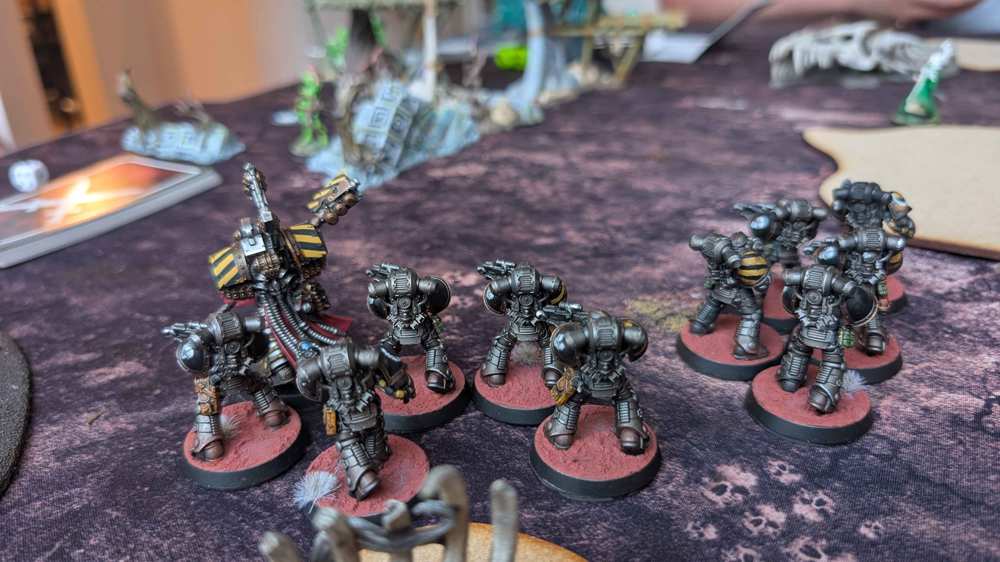

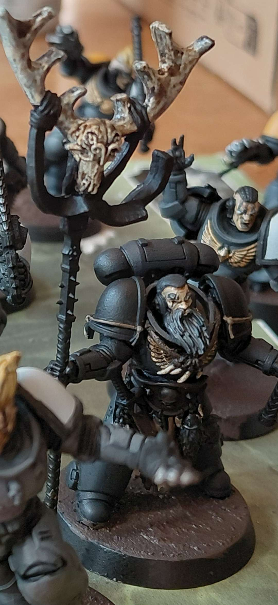
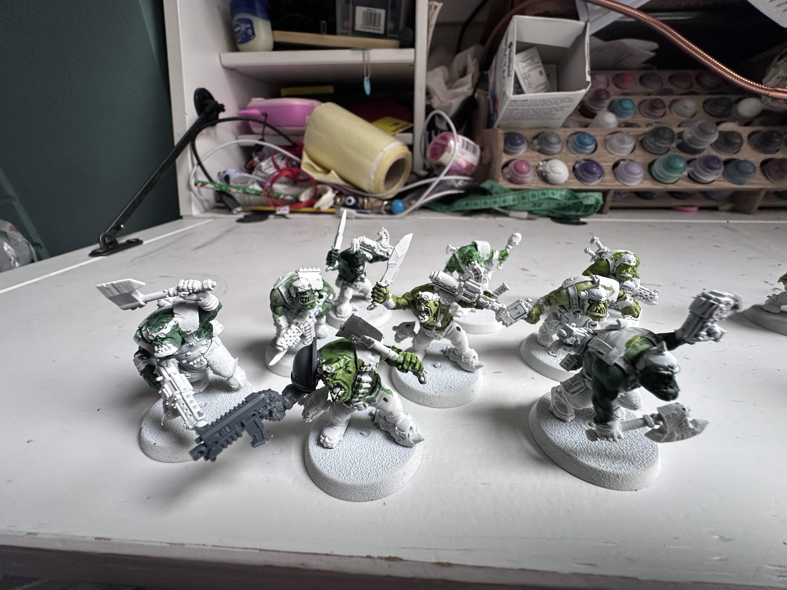
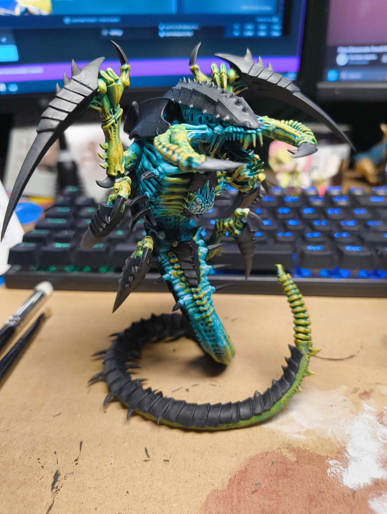
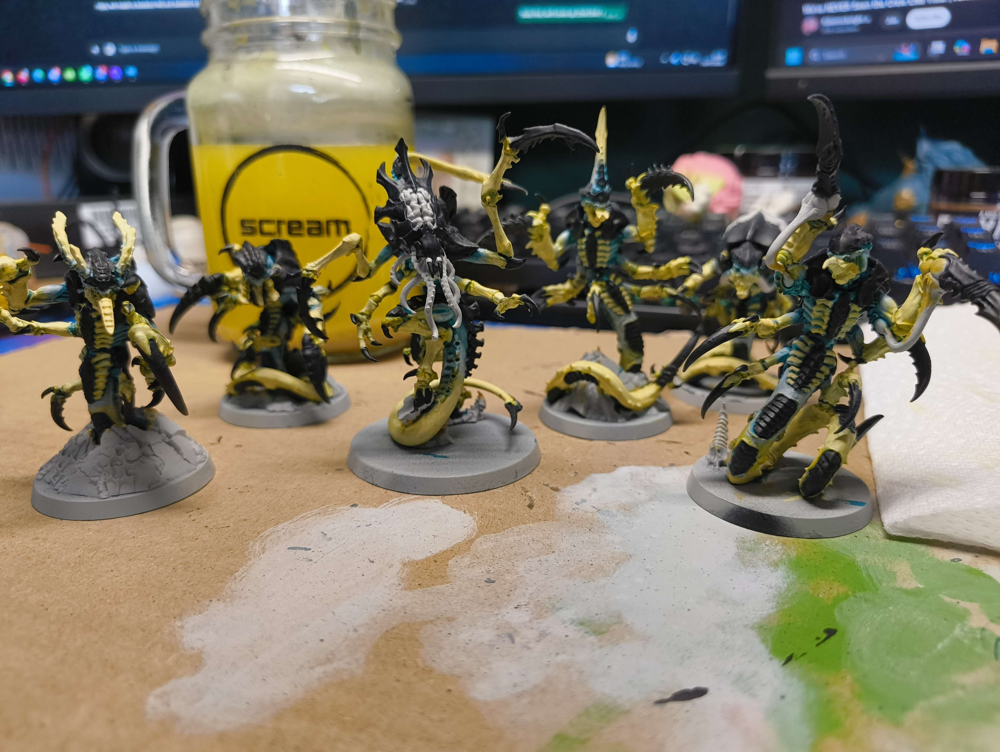
"As larger armies descend upon Kharon Reach and the war escalates month by month, one truth becomes impossible to ignore:
Something beneath the planet is waking up.